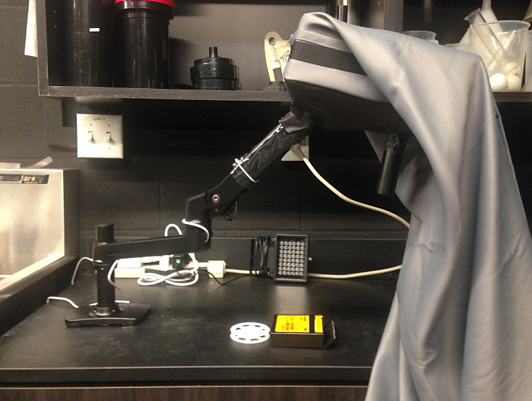
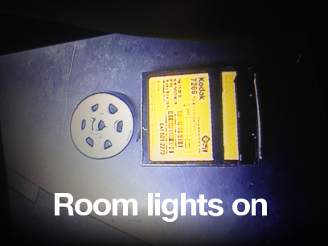
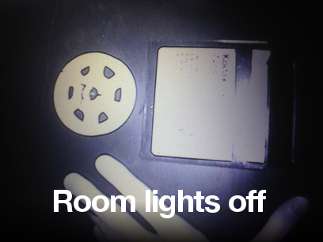
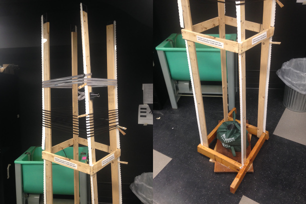
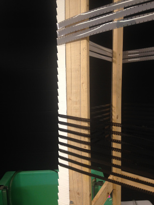
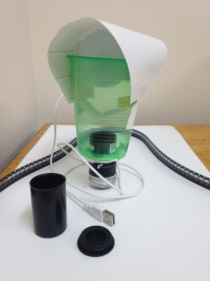
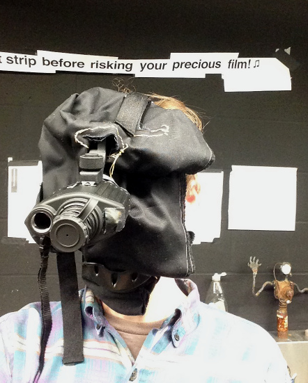

- Music/Sound:
- Duophonic guitar pickup
- VSTs for you
- Ringdown, VST
- Ed Myrol, VST
- Pianofax, VST
- PMer, VST
- Impulse Control, VST
- Music software for you
- Bedtime, resonators
- Keytrails, pitched delay line
- Parody, PD analog mockery
- Music devices at home
- Toy piano magnetic pickup
- Piano damper tricks
- Harmonizers
- Four string tunings
- Film Tech Archive:
- Motion film hand lab
- Infrared Viewer
- Vertical film drying rack
- Test strip printer
- Film tech small victories
- LED projector
- 16MM Framewise Transfer
- Photochemical
- Action camera color
- Blue reversal
- Carl:
- Show must've went on
- Contact
- Go home now
This page details some custom fixtures made during my time as technician at SUNY Binghamton Cinema.
Infrared Viewer
Our infrared viewer allows direct inspection of unprocessed film. It’s built from a cheap infrared outdoor security camera, a small monitor, monitor extension arms, and an infrared 940nm flood light. A curtain is placed over one’s head to prevent visible light from bouncing off the face and fogging the film. This seems to work great with the Tri-X our students work with. Other films should be tested for IR sensitivity.
For experienced filmmakers, it’s usually quicker to simply load in darkness by feel. In a learning darkroom, this is nice to have. It’s much more realistic to expect a first-time LOMO tank user to warm up to hand processing if they have eyes on the spiral. With care, the device can be extended over the sink to inspect during development.
The concept works. One could try strapping a battery-powered camera and monitor directly to one’s face. This is less elegant than an infrared monocle but could be much easier to use. Auto-focus and better depth of field are huge advantages. The CCD video camera would not be as delicate as the infrared monocle, which shouldn’t be operated in strong light.
To top
Vertical Film Drying Rack
This is our custom vertical film drying rack. It’s made with eight lasercut acrylic shark tooth pieces. They’ve been treated with a rubber-ish coating. Maximum capacity is probably close to five hundred feet. Sadly, like several of our custom fixtures, it is too tall. A person measuring six foot five can just barely reach the top of the rack. The support structure is just as willy wonka as it appears in the photograph. It dries film just fine.
The rack rests on two boards with a circular bearing between. Two home-made cheapskate sandbags keep the rack centered and smoothly-rotating. It’s often possible to crank film onto the rewind crank directly from the rack, if one is feeling bold. In theory, one could wrap the film around the rack with the emulsion out and sprockets down to encourage any water marks to form around the sprockets instead of in the image. A prototype I made out of manila folders used to spin all by itself when the fan was pointed at it.
To top
Test Strip Printer
I use this stunning construction to make casual 16mm control strips. It's an old D-mount lens from a Bolex double 8mm camera. We don't shoot 8mm at the school anymore but the threads fit into the C-mount of a 16mm Bolex. The image this casts on the film covers only a circular subset of the 16mm frame. Some folded paper taped between the lens and a cheap USB-powered LED light casts a casual gradient. Transport speed is adjusted until the brightest parts of the image are over-exposed. The frame varies from totally dark outside of the D-mount image circle, to the brightest parts within. I shoot 100 feet of film, cut it into ~2 inch lengths and place these in individual film canisters. Students pull strips and use them to test their method and the strength of the chemistry before processing anything important.
Making the strips is possible with the help of a close-focusing infrared monocle and a 940nm IR LED floodlight:
